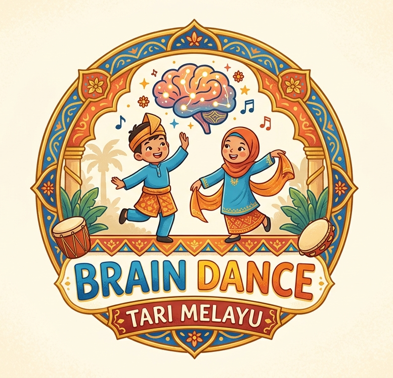

Latihan gerak
8 Gerak Brain Dance Tari Melayu

Gerak 1
Takzim
- Mengalirkan oksigen ke otak
- Menenangkan sistem saraf
- Meningkatkan fokus dan kesiapan belajar
- Mengurangi stres atau gelisah pada anak
Gerak 2
Siku Keluang Samping
- Meningkatkan kesadaran tubuh atau body awareness
- Menstimulasi indera peraba
- Memberi rasa aman dan nyaman
- Penting untuk anak yang membutuhkan grounding
Gerak 3
Bentang Alam Samping
- Mengembangkan kontrol tubuh
- Melatih ekspansi dan kontraksi
- Mendukung keseimbangan dan stabilitas
- Dasar untuk gerakan besar dalam tari
Gerak 4
Bentang Alam Atas Bawah
- Menguatkan fleksibilitas tulang belakang
- Mendukung koordinasi antara kepala dan tubuh
- Penting untuk postur tubuh
- Meningkatkan kesadaran arah gerak
Gerak 5
Lenggang Atas dan Tandak Kaki
- Melatih koordinasi tubuh bagian atas dan bawah
- Mendukung kemampuan duduk, berdiri, berjalan
- Penting dalam aktivitas motorik kompleks
Gerak 6
Buka Bunga Samping
- Mengembangkan dominasi sisi tubuh atau laterality
- Persiapan untuk keterampilan seperti menulis
- Menguatkan koordinasi unilateral
Gerak 7
Meniti Batang
- Mengintegrasikan otak kiri dan kanan
- Meningkatkan kemampuan membaca dan menulis
- Mendukung koordinasi kompleks
- Sangat penting untuk fungsi kognitif
Gerak 8
Putar Alam
- Mengembangkan sistem keseimbangan
- Meningkatkan orientasi ruang
- Mendukung fokus dan perhatian
- Penting untuk kontrol gerakan tubuh